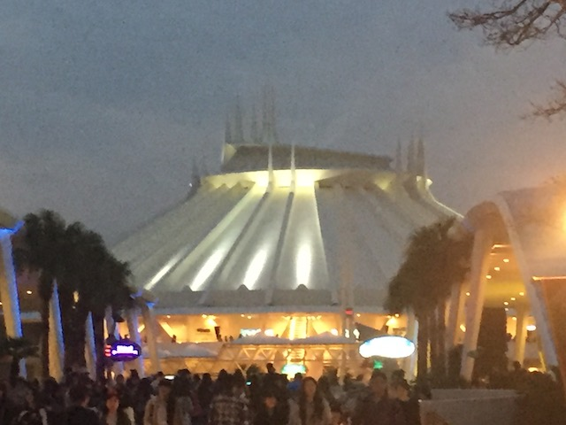
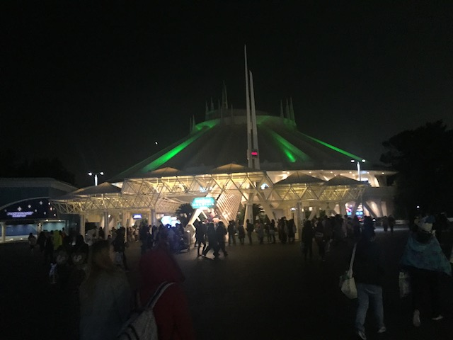
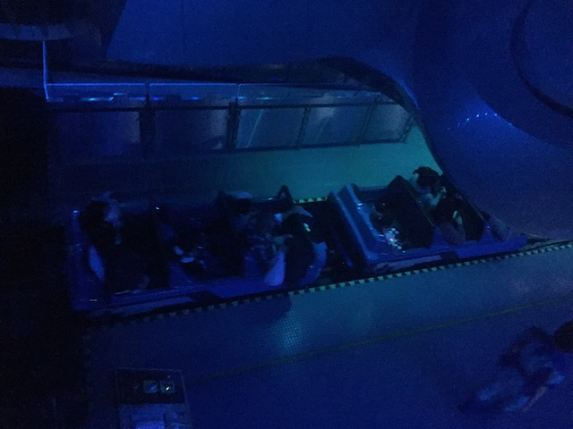
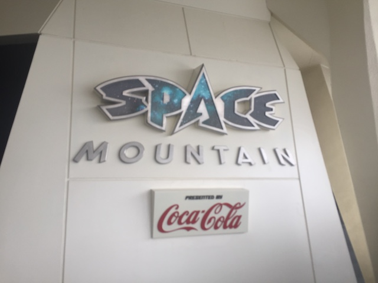
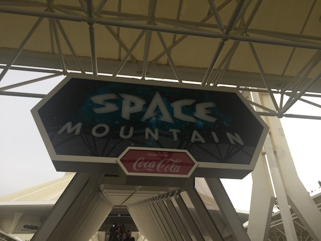
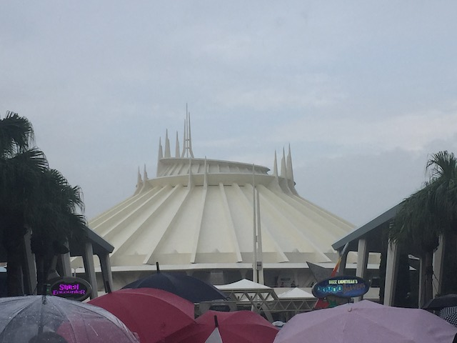

| |
Space Mountain Review

We're here at Tokyo Disneyland. And today, we're going to be reviewing the Disney classic and staple, Space Mountain. This is a coaster that is famous by damn near everyone, and is unquestionably, one of the most popular Disney coasters. If it wasn't for Shanghai Disneyland, then ALL of the Disney Resorts would have some iteration of Space Mountain. And out of the 4 Space Mountains that I've ridden, this one is sadly, the weakest one. Now don't worry. It's still Space Mountain. And still a lot of fun. But how? It looks just like the California version. Even has the same cars. So let's hop in them, pull down the lap bar, and get riding. o turn and go up into the first lifthill. You hear anything? Yeah. I'm just gonna spoil what is without a doubt, the biggest issue with the ride. No music. You don't really notice it on the CA Space Mountain, but that soundtrack that Michael Giacchino makes for the ride REALLY helps the ride. It breathes life and energy into the ride. Just like how a great composer can turn a scene about two morons wandering an empty house in a good horror movie intense and thrilling, The same principal applies for taking what would be a dull and boring family coaster naked, outside, with no theming. Much like the horror movie, throw in good lighting and a bitching soundtrack, and you have a great ride. Tokyo's Space Mountain doesn't have it, and that really hurts the ride. Also, the light effects for take off aren't as good here. You know how when Florida does the effect much better than California? Same goes for Japan. Though you could argue that they're trying to go for something more....Tronish? But the blue flashing lights just work better. Then you go through the second lifthill. On this lift, you have instead of the disorenting red lights, this electrical storm, that is accompinied by some cool and kind of creepy sound effects. On something that's not Space Mountain, I would be praising the sh*t out of this. But...this is Space Mountain. At Tokyo Disneyland! The Disney Resort with the most amazing theming. Which is why it feels icky to complain about the theming on their version of Space Mountain. But I try and be blunt and honest when writing these reviews. Then you reach the top, you see galaxies and stars. Then you climb a small third lift, then off you go!!! While I know most of this ride is left turns with a right turn at the end with a bright flash, it's still fun (Even if its the weakest Space Mountain). I honestly feel like this Space Mountain is a clone of what California's used to be until it got its big makeover in 2005. While I rode pre-makeover Space Mountain, I don't remember it, so I can't tell for sure if this is what it was like. Regardless, Tokyo Space Mountain, while a lot of fun, does feel kind of stuck in the 1980s. I'm guessing this is just from all the attention being directed towards Tokyo DisneySea and other big new projects, like that amazing Beauty and the Beast ride. But I really do think that they should give Space Mountain a makeover sometime.
7/10
Location: Tokyo Disney Resort
Opened: 1983
Built by: Tokyo Disneyland
Last Ridden: November 13, 2018
Space Mountain Photos






Home
|